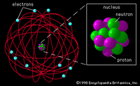
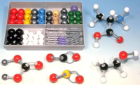

| WARM UP - DIAGNOSTIC AND INTRODUCTION |
DATE | TOPIC | Worksheet | Solutions / Internet Links |
September8 | Welcome and Orientation
-Website and Google Classroom
-Course outline - 2020-2021
-Quizlet - using WHMIS, various sets
-Khan Academy and CK12 resources
| Element List
Memorize the name, symbol, metal or non metal, latin name if applicable |
|
9 | Element list - Awkward interrogation
Parts of the periodic table
Quizlet: Periodic table (periodic table)
Diagnostic: Chemistry
Quizlet:
WHMIS 2015, Chemistry Warm up
Periodic table, 50 elements and latin names,
Physical and chemical properties,
| Chem Review from Grade 10 | Are You Ready worksheets
|
10 | Element list - Awkward interrogation
Diagnostic Discussion, continue working on questions
Safety: page x - xiii
1.Know the symbols and the meaning for each of the textbook safety precautions and WHMIS safety categories. Need to know 2015 symbols!
2. Be able to describe a risk and a precaution for each WHMIS category.
3. Research the importance of a SDS. These used to be called MSDS. Why would we require to have them available in the laboratory?
4.
Explain the general safety rules and procedures in the laboratory. Read
over the safety rules, eye and face safety, handling glassware safety,
heat and fire safety, and handling chemicals safety sections.
5. Types of fire extinguishers
6.
Expected to know the proper waste disposal rules
Laboratory Orientation - Location of Safety Equipment
Quizlet:
WHMIS 2015;
Science Equipment HHSS;
Chemistry Warm up
| Solutions to Grade 10 Review |
|
UNIT 1 Matter, Chemical Trends, and Chemical Bonding
- Every element has predictable chemical and physical properties determined by its structure.
- The type of chemical bond in a compound determines the physical and chemical properties of that compound.
- It is important to use chemicals properly to minimize the risks to human health and the environment.
|
Friday
11
| Textbook appendices - Make a list of the resources available
Section 1.1; 1.2; 1.3 - Chemistry Warm Up
What is Chemistry? - pages 6-7 - skim
Describing Matter
Physical vs chemical properties
- qualitative vs quantitative
- SI Units - conversion
- Significant Digits - skim over (quick example)
- Accuracy vs Precision
Classifying Matter
-Changes of state
-Physical vs chemical change
-Flowchart of Matter
Complete Schoology Quizzes
-Element Matching
-Matter and Atomic Structure
| Metric Conversions worksheet
Significant Digits(Figures), Scientific Notation worksheet
Unit Conversion Worksheet | Metric Table |
14
| Unit Conversions - practiced some, used scientific Notation
The Atom
-From the periodic table to Standard Notation
-Isotopes
-Isotopes vs Radioisotopes
Calculation of Relative Atomic Mass
-Isotopic Abundance
Isotopes and Atomic mass - pg 35-38
Complete Schoology Quizzes
-Matter and Atomic Structure | Note from today - Feb 9 | Khan Academy Article - Isotopes
|
| 15 | The Atom -Atomic Mass is relative
-Structure and the connection with Scientists - Dalton, Thompson, Rutherford, Bohr, Chadwick
-Timeline of atomic theory and
- A Summary of how the Models have changed over time
Dalton atomic theory --> How the theory has changed over time
Textbook- 2.1 - pg 34 - 39
| Worksheet on Isotopes
 | Atomic Theory: VIDEOS
Atomic Theory Video
Sheet answers
Atomic Theory - dalton
to bohr webquest
The Webquest number 2 |
| 16 | Periodic Table and the Atomic structure (section 2.2)
Blank Periodic Table
Question Period on PT
Video sheet: Video(24 min): Elements
Organized - older but good stuff
How is the Periodic Table organized?
What trends are present in the groups?
-alkali metals, noble gases
Why are carbon and silicon in the same group?
What trends are present in the periods?
-how was the trend explained?
Are there exceptions to the trends?
| Complete the following worksheet on the blank periodic table provided | The periodic table(12 min) - crash course |
| 17 | Quiz on elements, safety, WHMIS
History of the Periodic Table - How did we get to the present day form
Makes Notes about the following Scientist from the selected website
- Dobereiner (In "Table Formation)
- Newlands
- Meyer
- Mendeleev !!
- Moseley
|
|
BBC volatile chemistry
- 4 min -
periodic table
TED Lesson - 5 min -
Mendeleev Important discoveries
|
Friday
18 | Trends in periodic table
- Describe the trend in reactivity? WHY - we need info
- Before we can explain trends...
- BR diagrams
- metals vs nonmetals
- terms - nuclear charge, effective nuclear charge, Z-effect, isoelectric, electron shielding
- Describe the trend in atomic radius
- How can we explain the trend
Blank Periodic Table
Bohr Rutherford Diagrams - electron shells and protons
Blank PT for B-R diagrams |
|
|
| 21 | Trends in periodic table
- terms - nuclear charge, Z-effect, electron shielding
- Ionic Radius
- Ionization energy
- First Ionization vs second ionization energy
Blank Periodic Table
Bohr Rutherford Diagrams - electron shells and protons
Blank PT for B-R diagrams
| RSC - trends
Some Periodic Trends
| Practice on trends of the periodic table |
| 22 | Compare 2 elements, using terms NC, ENC, ES
Continue to discuss Trends - Section 2.3
- Ionization energy - term - effective nuclear charge, isoelectronic
- compare 2 isoelectronic particles
- electron affinity
- electronegativity
Blank Periodic Table
Worksheet on trends
| Trends in the periodic table - powerpoint |
Worksheet
on trends - solution to page 1
|
| 23 | Review Trends -
- Can we explain the reactivity trend that occurs in the periodic table
Reading 3.1 - Types of Compounds - pg 66-70
Textbook
Empirical vs Theoretical properties
- Describe empirical and theoretical properties of ionic compounds
- Describe empirical and theoretical properties of molecular compounds
|
|
|
| 24 | Why do chemicals react - octet rule - Helium?
-Models - Lewis, Structure and terminology [lone pairs, bonding electrons, valence]
Ionic Bonding - Ionic Compounds
WHY and HOW
modelling ionic bonding
Covalent Bonding - Molecular Compounds
WHY and HOW
Modelling covalent bonding
Read 3.2 - Textbook | 
Chemical Bonding - ionic
and covalent |
|
Friday
25 | Crash Course - Bonds
-all bonds are the same but they are different
Bonding Continuum - differences in electronegativity
Do the empirical properties support the method of bonding?
Ionic? Model of Ionic Compound
What does the formula of the ionic compound represent?
One more example of an ionic compound: Al and O
|
|
|
| 28 | Molecular vs Ionic - Elements, EN diff, Properties
Why do we think that electrons are shared in covalent bonding?
Model of Molecular Compound
What does the formula of a molecular compound represent?
Collection of molecules
Comparing models of molecular compounds - CO2 vs SO3
Molecular Compounds: Drawing Lewis Structures
- rules (we do not worry about formal charges)
Try nitrate, sulfate and carbon dioxide
| Motion of particles
| Crash Course bonding models |
| 29 | Explaining properties of chemical compounds
Molecular Compounds: Polar vs Non Polar
- Deciding polarity based on shape and bonds
Polar Bond, Non Polar Bond
Polar Molecule, Non Polar Molecule
-H2O, CO2, other molecules
Read section 3.3 - Textbook
| Intermolecular Forces - polar
and non polar | Crash Course polar and nonpolar |
| 30 | Shapes - based around central atom
- determined by number of electron pairs
- one or two sets - linear
- three sets - trigonal planar or bent
- four sets - bent, trigonal pyrimidal, tetrahedral
Intermolecular Forces vs Intramolecular Forces
Homework molecules - polar vs nonpolar
think about shape
(NH3, CH3F, CF4) |
|
|
October1 | Intermolecular Forces vs Intramolecular Forces
-London Dispersion (ex. states of the halogens)
-DipoleDipole
-Hydrogen Bond
worksheets on polarity, review ch 3 questions
solutions to worksheets | class note
|
|
Friday
2, 5
| Discussion about what may be on the test
REVIEW FOR UNIT TEST
check schoology for list of questions |
|
|
| 6 | Unit Test - chapter 1, 2 and 3 |
|
|
{kind=link}
{kind=link}
{kind=link}
{kind=link}
{kind=link}
{kind=link}
{kind=link}
{kind=link}
{kind=link}
{kind=link}
{kind=link}
{kind=link}
{kind=link}
{kind=link}
{kind=link}
{kind=link}
{kind=link}
{kind=link}
{kind=link}
{kind=link}
{kind=link}
{kind=link}
{kind=link}